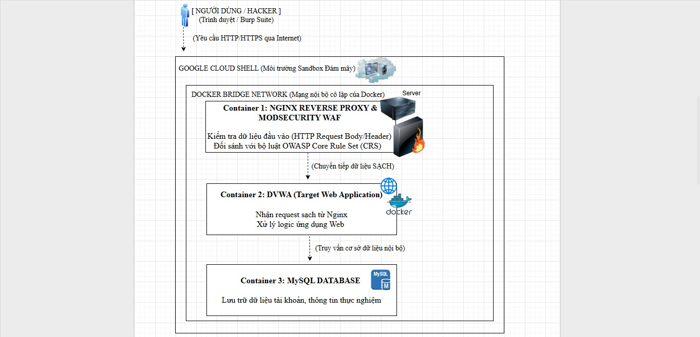
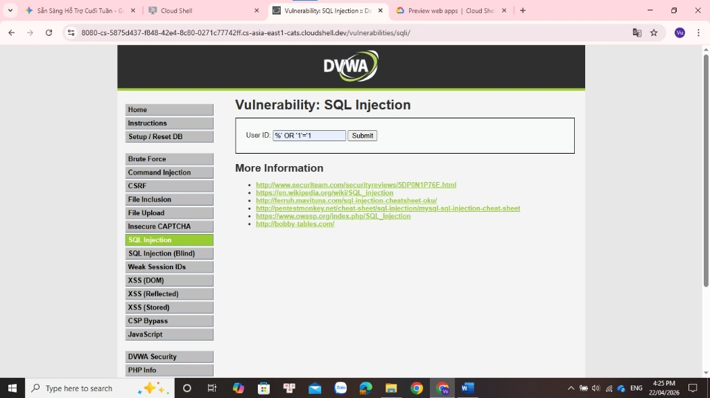
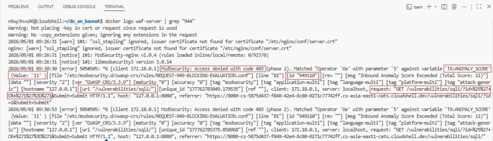
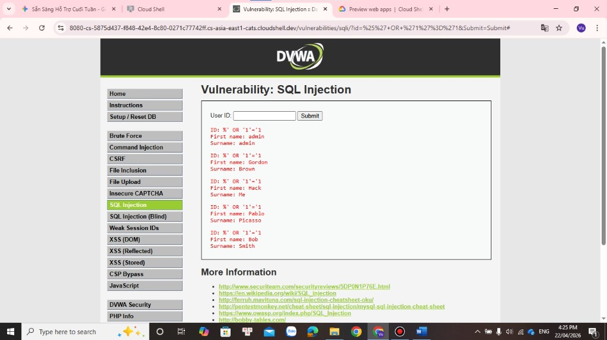

Xem ảnh chi tiết
Hệ thống tường lửa ứng dụng web (L7) được triển khai bằng Nginx Reverse Proxy và engine ModSecurity v3 cùng bộ quy tắc bảo vệ OWASP Core Rule Set. Bảo vệ mục tiêu DVWA trước 3 kịch bản tấn công: SQL Injection, XSS và Brute Force.
Thử nghiệm trực tiếp các kỹ thuật tấn công phổ biến trong OWASP Top 10 và quan sát sự khác biệt khi TẮT WAF (hệ thống bị khai thác) so với khi BẬT WAF (chặn đứng 403 Forbidden).
Chèn câu lệnh SQL bất hợp pháp vào tham số `id` nhằm vô hiệu hóa mệnh đề WHERE và trích xuất trái phép cơ sở dữ liệu tài khoản người dùng từ DVWA.
Bản mô phỏng chính xác lệnh thực thi trên Google Cloud Shell: docker logs waf-server | grep "944"
Toàn bộ luồng truy cập được định tuyến qua lớp Proxy trung gian, phân tích dữ liệu 5 giai đoạn trước khi cho phép chạm tới DVWA.
Kiểm tra Method, User-Agent, URI, Host, và Cookie bất thường.
So khớp regex, libinjection đối với dữ liệu POST/GET (Bắt SQLi, XSS).
Kiểm tra thông tin phản hồi từ Server (ẩn banner Nginx, Apache).
Chặn rò rỉ mã lỗi cơ sở dữ liệu hoặc thông tin hệ thống nhạy cảm.
Ghi vết toàn bộ hành vi vi phạm vào tệp log phục vụ điều tra số (DFIR).

Hình 1: Sơ đồ triển khai Docker Compose giữa Nginx WAF và DVWA
Được biên dịch trực tiếp vào Nginx. Thiết lập ở chế độ Anomaly Scoring Mode với ANOMALY_INBOUND_THRESHOLD=5. Khi tổng điểm các vi phạm $\ge 5$, mã phản hồi 403 Forbidden sẽ được kích hoạt tức thì.
Lắng nghe ở cổng 8080 của Host, đóng vai trò cửa ngõ duy nhất. Chỉ chuyển tiếp các request sạch về container vulnerable-web:80.
Ứng dụng PHP/MySQL chứa sẵn các lỗ hổng bảo mật chuẩn kiểm thử, được cô lập trong mạng nội bộ Docker và không mở cổng trực tiếp ra ngoài Internet.
Ảnh chụp màn hình các giai đoạn tấn công và phòng thủ được ghi nhận thực tế trong quá trình làm đồ án.

Nhập payload %' OR '1'='1 vào form User ID của DVWA trên Google Cloud Shell web preview.

ModSecurity ghi nhận Anomaly Score: 11, kích hoạt Rule 949110 chặn đứng HTTP 403.

Khi không có WAF bảo vệ, hệ thống trả về 200 OK và rò rỉ danh sách tài khoản: admin, Gordon, Hack, Pablo, Bob.
Các tệp cấu hình cốt lõi đã được kiểm thử và đóng gói sẵn trong Repository GitHub của đồ án.
# Đang tải cấu hình...Dễ dàng chạy lại môi trường thực nghiệm trên Google Cloud Shell, VPS hoặc máy tính cá nhân.
Truy cập ứng dụng tại địa chỉ: http://localhost:8080 (hoặc cổng Web Preview trên Cloud Shell).